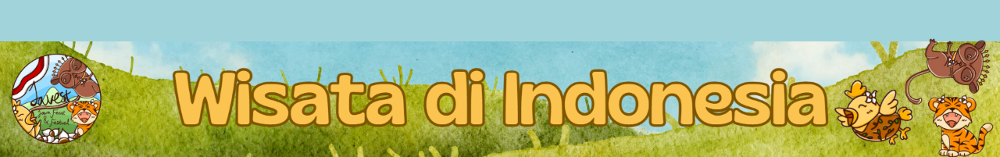

Home
Pendahuluan
Wisata ▾
Lokasi
Tentang Wisata
Fun Fact
Daya Tarik
Sejarah Wisata
Daftar Pustaka
Profile
Daftar Pustaka
liputan6.com
(Diakses pada 11 Maret 2025, 19.35 WIB)
suhartonotourtravel.com
(Diakses pada 11 Maret 2025, 19.40 WIB)
batiqa.com
(Diakses pada 11 Maret 2025, 19.53 WIB)
mamikos.com
(Diakses pada 11 Maret 2025, 19.55 WIB)
areioutdoorgear.co.id
(Diakses pada 12 Maret 2025, 13.10 WIB)
tourdejava.net
(Diakses pada 12 Maret 2025, 13.12 WIB)
rri.co.id
(Diakses pada 12 Maret 2025, 13.20 WIB)